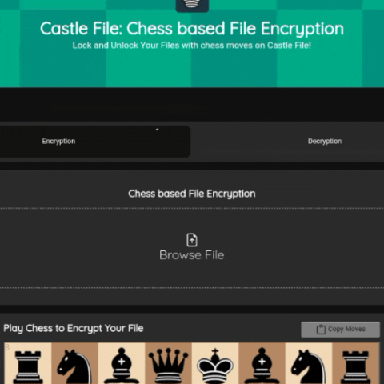
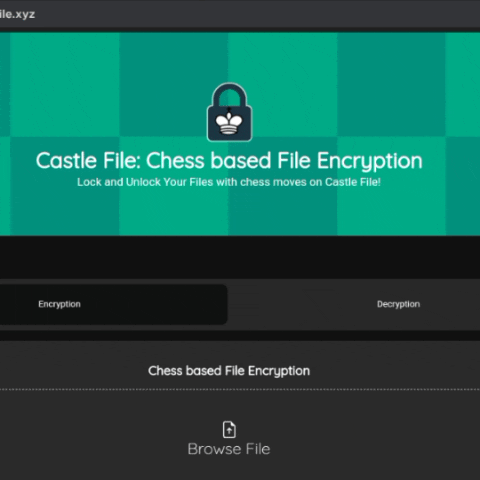

About
CastleFile is not just another file encryption website—it’s a completely new approach to file security. Traditional encryption methods rely on static passwords or randomly generated keys. CastleFile transforms this paradigm by using chess moves as an essential component of the encryption process. Your moves become the key to securing your files, making the encryption process both unique and highly personalized.
CastleFile is a revolutionary platform that brings together the art of chess and cutting-edge encryption technologies to ensure the highest level of security for your files. Designed for individuals and businesses who prioritize privacy and innovation, CastleFile combines your unique chess moves with AES encryption to create an unparalleled data protection system. This page provides an in-depth look at CastleFile, its features, best practices, limitations, and technical details.
Every interaction on CastleFile is driven by the following core values:- Security: Your data is protected using AES-GCM encryption, ensuring confidentiality and integrity.
- Privacy: Your encryption keys and files are never stored on CastleFile.
- Innovation: By combining chess strategy with cryptographic principles, CastleFile makes encryption both engaging and reliable.
Features
1. Chess Move Integration
- The encryption and decryption processes are based on the sequence of chess moves you play on a virtual board.
- The moves are transformed into a cryptographic key, ensuring that no two keys are the same.
- The website offers move suggestions for users who are less familiar with chess strategies, helping create strong keys while maintaining user-friendliness.
2. AES Encryption
- CastleFile uses the AES-GCM encryption standard, trusted worldwide for its reliability in securing sensitive data.
- The encryption ensures both data confidentiality and integrity, meaning your files cannot be accessed or tampered with.
3. Security and Privacy
- CastleFile does not store your files, keys, or data.
- Once the encryption or decryption process is complete, the files are deleted from the system, leaving no trace behind.
- The platform ensures that even CastleFile’s administrators have no access to your data.
4. Unique and Different
- Unlike other websites that use static passwords, CastleFile creates a dynamic, personalized encryption process.
- The chess-based system makes brute-force attacks or password guessing virtually impossible, as the number of possible move combinations is astronomical.
Usage
Usage Guide for CastleFile – The Chess-Based Encryption Website CastleFile offers a secure and innovative way to encrypt and decrypt files using your chess moves. This page will guide you step-by-step through the encryption and decryption process while providing a clear understanding of what happens in the background. Let’s dive in!
File Encryption:
- Visit CastleFile.xyz.
- Choose the "Encryption" option.
- Upload the file you wish to encrypt (e.g., a PDF, image, or document).
- Play Minimum 4 Chess Moves.
- Click copy button and save the sequence of moves.
- Click "Encrypt" button.
- Encrypted File will be automatically Downloaded.
Encryption Process in the background:
• Chess Moves to Cryptographic Key:
- CastleFile captures the exact sequence of your chess moves.
- These moves (e.g., e2-e4, g8-f6) are converted into numerical values using pre-defined algorithms.
- The numerical values are further processed to generate a unique AES-GCM encryption key.
• AES-GCM Encryption:
- The uploaded file is encrypted using the generated key.
- AES-GCM not only encrypts the file but also ensures its integrity by adding authentication data.
- This prevents tampering during storage or transfer.
• File Security:
- Neither the encryption key nor the file is stored on CastleFile’s servers.
- Once the process is complete, the file is deleted from the server, ensuring complete privacy.
File Decryption:
- Visit CastleFile.xyz.
- Choose the "Decryption" option.
- Upload the encrypted file to decrypt.
- Play the exact sequence of chess moves you played during encryption.
- Click "Decrypt" button.
- Decrypted File will be automatically Downloaded.
Decryption Process in the background:
• Chess Moves to Key Matching:
- CastleFile takes the input chess moves and converts them into numerical values.
- The generated values are compared with the original sequence to verify the input.
• Key Regeneration::
- Once the moves are validated, the same cryptographic key used for encryption is regenerated.
- This ensures that only the correct sequence of moves can decrypt the file.
• AES-GCM Decryption:
- The encrypted file is decrypted using the regenerated key.
- The authentication data ensures that the file has not been tampered with during storage or transfer.
• Secure File Handling:
- As with encryption, neither the key nor the decrypted file is stored on CastleFile’s servers.
- The decrypted file is downloaded and then removed from the system.
Best Practices
1. Save Your Chess Move Sequence
Always securely store the sequence of moves you use for encryption. Without it, decryption will not be possible.2. Use Complex Chess Strategies
Play more than the minimum 4 moves to enhance the complexity of the encryption key. The more moves you play, the harder it becomes to break the encryption.3. Verify File Integrity
After encryption, download the file and verify its integrity to ensure the process was successful.4. Use Updated Browsers
Ensure you are using the latest version of your browser for compatibility and security.Limitations
1. Dependency on Chess Moves
The decryption process requires the exact same chess move sequence as used during encryption. If you lose the sequence, the file cannot be decrypted.2. Browser Compatibility
Certain features may not work optimally on outdated or unsupported browsers. Mobile users may experience issues with repeated downloads if the browser’s cache is not cleared.3. File Size Limitations
Currently, CastleFile supports files up to a certain size limit to ensure faster processing and optimal performance.4. No Recovery Option
For security reasons, CastleFile does not store encryption keys or files. If the chess move sequence is lost, recovery is impossible.Technical Details
1. File Upload: The user uploads a file.
When the user uploads a file on the CastleFile platform, the process initiates the encryption and decryption workflow.- Secure Transfer: The file is uploaded securely to the platform, often using HTTPS to ensure data integrity during the transfer.
- File Handling: The file is processed locally in the browser to prepare it for encryption. No storage of the file occurs, ensuring privacy.
2. User Plays Chess Moves: They're captured and converted into Encryption Key.
This function combines chess moves from both the user and the bot, processes them using a cryptographic hashing algorithm (SHA-256), and generates a unique 256-bit key. This key can then be used in encryption processes, such as AES (Advanced Encryption Standard), to secure files.
async function generateKeyFromMoves(userMoves, botMoves) {
const combinedMoves = userMoves.concat(botMoves).join("");
const msgUint8 = new TextEncoder().encode(combinedMoves);
const hashBuffer = await crypto.subtle.digest("SHA-256", msgUint8);
return hashBuffer.slice(0, 32); // AES key requires 256 bits
}
1. Input Data and Combine It:
const combinedMoves = userMoves.concat(botMoves).join("");- userMoves: Chess moves played by the user (e.g., ["e2e4", "g1f3"]).
- botMoves: Chess moves played by the bot (e.g., ["e7e5", "b8c6"]).
- userMoves.concat(botMoves): Combines both arrays into a single array of moves.
- .join(""): Joins all moves into a single string without any separators.
2. Encoding to Binary Format:
const msgUint8 = new TextEncoder().encode(combinedMoves);- New TextEncoder(). encode(combinedMoves): Converts the combined string of moves into a binary format (Uint8Array).
- This ensures the data can be processed by cryptographic algorithms.
3. Hashing the Data:
const hashBuffer = await crypto.subtle.digest("SHA-256", msgUint8);- crypto.subtle.digest("SHA-256", msgUint8): Applies the SHA-256 hashing algorithm to the binary data.
- SHA-256 produces a 256-bit (32-byte) cryptographic hash of the input.
- The hash ensures the generated key is unique and deterministic (the same moves will always generate the same key).
4. Extracting the Key:
return hashBuffer.slice(0, 32); // AES key requires 256 bits- hashBuffer.slice(0, 32): Extracts the first 32 bytes of the hashed data to match the 256-bit key size required for AES encryption.
3. File Encryption: The file is encrypted using the generated key.
This code demonstrates a JavaScript function, encryptFile, that encrypts a file uploaded by the user using the AES-GCM algorithm.
async function encryptFile() {
const fileInput = document.getElementById("fileInput").files[0];
// Generate encryption key
const keyBuffer = await generateKeyFromMoves(userMoves, botMoves);
const key = await crypto.subtle.importKey("raw", keyBuffer, "AES-GCM", false, ["encrypt"]);
const iv = crypto.getRandomValues(new Uint8Array(12)); // IV for AES-GCM
const fileData = await fileInput.arrayBuffer();
const encryptedData = await crypto.subtle.encrypt({ name: "AES-GCM", iv }, key, fileData);
const combined = new Uint8Array(iv.length + encryptedData.byteLength);
combined.set(iv);
combined.set(new Uint8Array(encryptedData), iv.length);
downloadFile(combined, "castlefile_" + fileInput.name + ".enc.txt");
}
1. File Selection
const fileInput = document.getElementById("fileInput").files[0];- The user selects the encrypted file using a file input field with the ID fileInput.
- The file is stored in the fileInput variable for processing.
2. Generate Encryption Key:
const keyBuffer = await generateKeyFromMoves(userMoves, botMoves);
const key = await crypto.subtle.importKey("raw", keyBuffer, "AES-GCM", false, ["encrypt"]);- Uses userMoves (user's chess moves) and botMoves (bot's chess moves) to generate a unique cryptographic key.
- The generateKeyFromMoves function creates a 256-bit key using a SHA-256 hash of the concatenated moves. This ensures the encryption key is unique to the game.
- The generated key is imported for use in AES-GCM encryption using the Web Cryptography API's importKey method.
3. Generate IV (Initialization Vector):
const iv = crypto.getRandomValues(new Uint8Array(12));- Creates a random 12-byte initialization vector (IV) for AES-GCM encryption.
- The IV adds randomness, ensuring the encryption output changes even if the same data and key are reused.
4. Read and Encrypt the File:
const fileData = await fileInput.arrayBuffer();
const encryptedData = await crypto.subtle.encrypt({ name: "AES-GCM", iv }, key, fileData);- Reads the file's binary data as an ArrayBuffer, preparing it for encryption.
- Encrypts the file data using the AES-GCM algorithm with the previously generated key and IV.
- The crypto.subtle.encrypt function returns an ArrayBuffer of encrypted data.
5. Combine IV and Encrypted Data:
const combined = new Uint8Array(iv.length + encryptedData.byteLength);
combined.set(iv);
combined.set(new Uint8Array(encryptedData), iv.length);
- Merges the IV and encrypted data into a single Uint8Array.
- The IV is stored at the beginning of the array, followed by the encrypted file data. This ensures the IV is available for decryption.
6. Download the Encrypted File:
downloadFile(combined, "castlefile_" + fileInput.name + ".enc.txt");- The downloadFile function triggers the download of the combined data (IV + encrypted file).
- The downloaded file is named with a prefix (castlefile_) to indicate it has been encrypted and appends the .enc.txt extension for identification.
4. File Decryption: The encrypted file is decrypted using the regenerated key.
This JavaScript function, decryptFile, is designed to decrypt a file encrypted using the AES-GCM algorithm. It relies on the user-provided and bot-generated chess moves to reconstruct the encryption key, ensuring the correct moves are essential for successful decryption.
async function decryptFile() {
const fileInput = document.getElementById("fileInput").files[0];
const keyBuffer = await generateKeyFromMoves(userMoves, botMoves);
const key = await crypto.subtle.importKey("raw", keyBuffer, "AES-GCM", false, ["decrypt"]);
const fileData = await fileInput.arrayBuffer();
const iv = fileData.slice(0, 12); // First 12 bytes are the IV
const encryptedData = fileData.slice(12);
try {
const decryptedData = await crypto.subtle.decrypt({ name: "AES-GCM", iv: new Uint8Array(iv) }, key, encryptedData);
downloadFile(decryptedData, fileInput.name.replace(".enc.txt", ""));
} catch (error) {
console.log(error);
}
}
1. Retrieve the File to Decrypt:
const fileInput = document.getElementById("fileInput").files[0];- The user selects the encrypted file using a file input field with the ID fileInput.
- The file is stored in the fileInput variable for processing.
2. Generate the Decryption Key:
const keyBuffer = await generateKeyFromMoves(userMoves, botMoves);
const key = await crypto.subtle.importKey("raw", keyBuffer, "AES-GCM", false, ["decrypt"]);- Uses userMoves (user's chess moves) and botMoves (bot's chess moves) to generate a unique cryptographic key.
- The generateKeyFromMoves function creates a 256-bit key using a SHA-256 hash of the concatenated chess moves from the user and the bot.
- The resulting key is imported using the Web Cryptography API's importKey function to be used in the decryption process.
3. Read and Separate the File Data:
const fileData = await fileInput.arrayBuffer();
const iv = fileData.slice(0, 12); // First 12 bytes are the IV
const encryptedData = fileData.slice(12);- Reads the encrypted file into an ArrayBuffer.
- Extracts the first 12 bytes as the Initialization Vector (IV), which was prepended during encryption.
- Separates the remaining data as the encrypted content.
4. Decrypt the File:
const decryptedData = await crypto.subtle.decrypt({ name: "AES-GCM", iv: new Uint8Array(iv) }, key, encryptedData);- Decrypts the encrypted data using the crypto.subtle.decrypt function.
- Passes the AES-GCM decryption algorithm, IV, decryption key, and the encrypted data as inputs.
- If the key, IV, or encrypted data are incorrect, decryption will fail and throw an error.
5. Download the Decrypted File:
downloadFile(decryptedData, fileInput.name.replace(".enc.txt", ""));- The downloadFile function triggers the download of the decrypted data.
- Renames the file by removing the .enc.txt extension, restoring the original file name.
6. Handle Errors:
catch (error) {
console.log(error);
}- If decryption fails (due to an incorrect key, IV, or corrupted data), an error message is displayed to the user.
- The error hints that the user must replay the same chess moves during decryption as were used for encryption to regenerate the correct key.
5. Download: The Encrypted or Decrypted file is Downloaded.
This JavaScript function, downloadFile, handles the task of downloading a file from the browser. It takes two parameters: the data to be downloaded and the filename to save it as.
function downloadFile(data, filename) {
try {
const blob = new Blob([data], { type: "application/octet-stream" });
const url = URL.createObjectURL(blob);
// Trigger download
const a = document.createElement("a");
a.href = url;
a.download = filename;
document.body.appendChild(a);
a.click();
// Clean up
document.body.removeChild(a);
URL.revokeObjectURL(url); // Revoke the Blob URL after use
} catch (error) {
console.error("Download error:", error);
}
}
1. Create a Blob:
const blob = new Blob([data], { type: "application/octet-stream" });- A Blob (Binary Large Object) is created to encapsulate the data to be downloaded.
- The type: "application/octet-stream" ensures the browser treats the file as raw binary data suitable for downloading.
2. Generate a Blob URL and Create a Hidden <'a'> Element:
const url = URL.createObjectURL(blob);- The URL.createObjectURL method generates a temporary URL pointing to the Blob. This URL can be used to access the Blob data, which is valid for the current browser session.
- A hidden <'a'> (anchor) element is dynamically created. This element is used to trigger the file download.
3. Assign Blob URL and Filename:
a.href = url;
a.download = filename;- The href of the anchor element is set to the Blob URL.
- The download attribute specifies the name of the file that will be saved on the user’s system.
4. Trigger the Download:
document.body.appendChild(a);
a.click();- The anchor element is temporarily added to the document body to make it part of the DOM.
- The click() method programmatically simulates a user click, triggering the file download.
5. Clean Up Resources:
document.body.removeChild(a);
URL.revokeObjectURL(url);- After the download begins, the anchor element is removed from the DOM to keep the document clean.
- The Blob URL is revoked using URL.revokeObjectURL(url) to free up memory, as Blob URLs consume resources.
6. Handle Errors:
catch (error) {
console.log(error);
}- If decryption fails (due to an incorrect key, IV, or corrupted data), an error message is displayed to the user.
- The error hints that the user must replay the same chess moves during decryption as were used for encryption to regenerate the correct key.